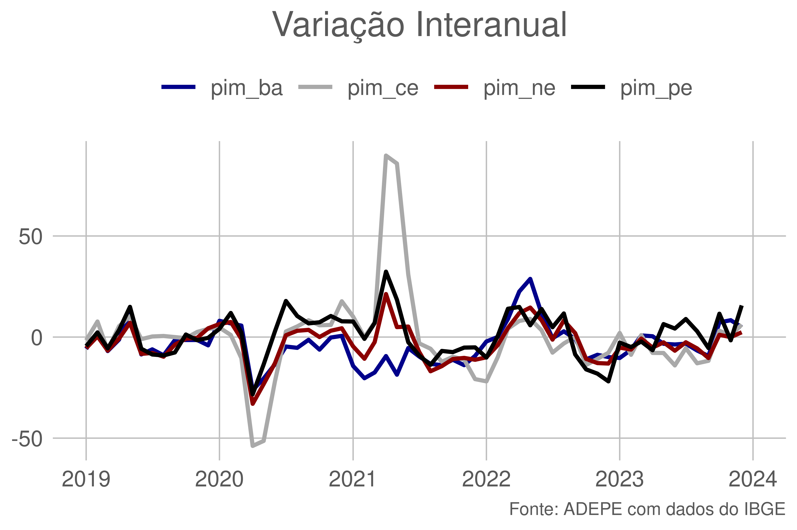
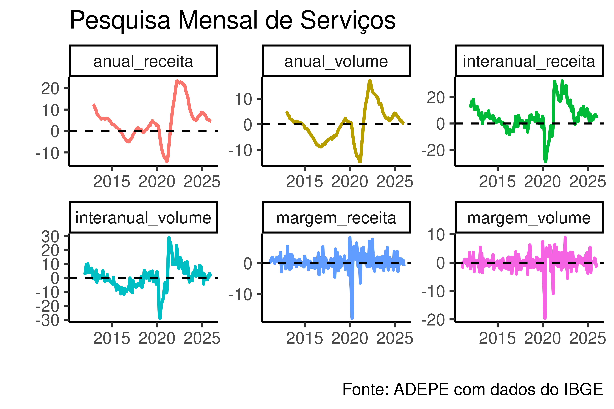
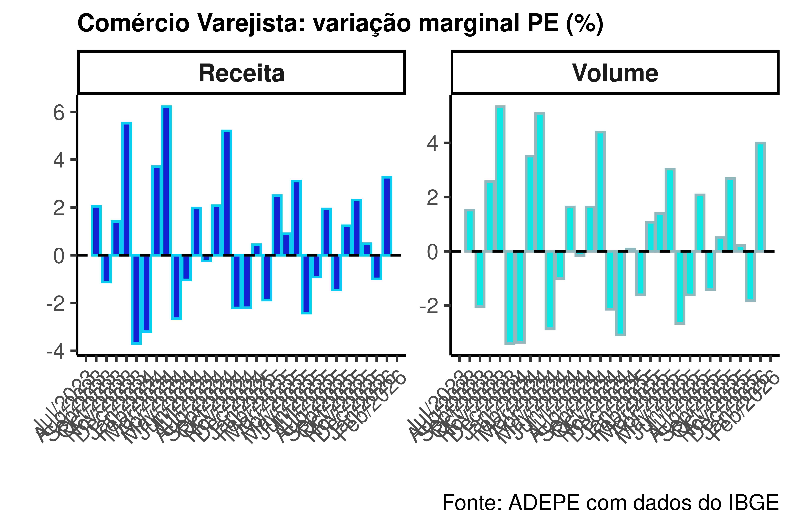
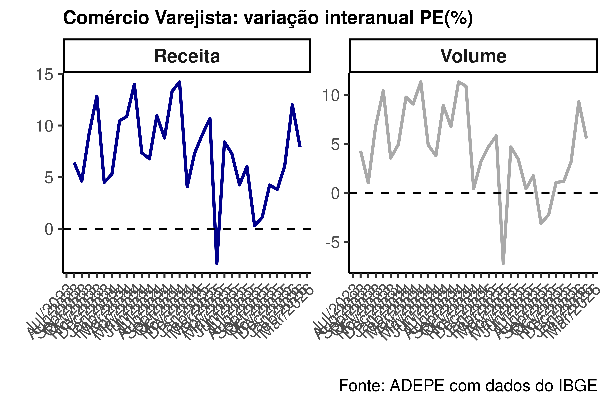
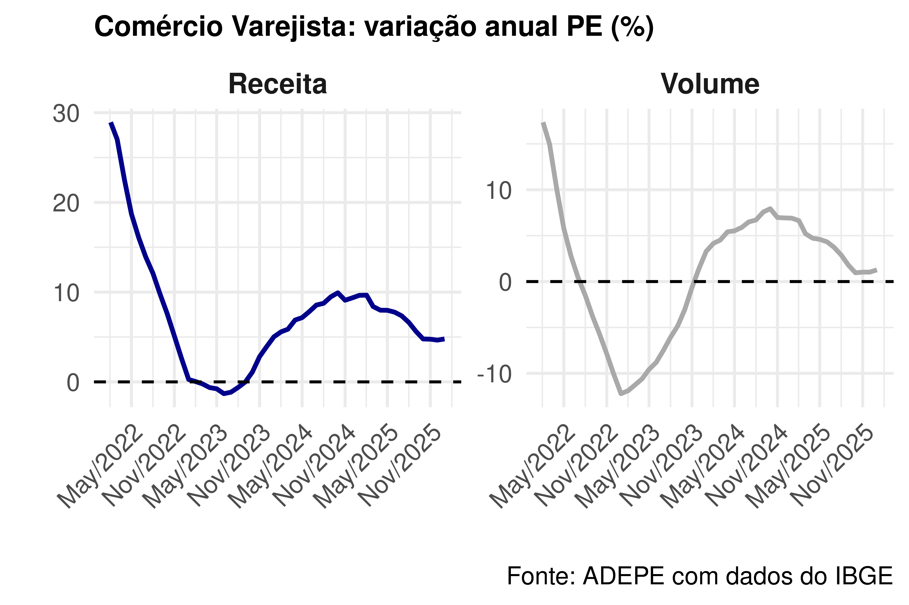

| Mês | Pernambuco | Ceará | Bahia | Nordeste |
|---|---|---|---|---|
| Sep 2023 | -5.53 | -11.65 | -9.24 | -10.31 |
| Oct 2023 | 11.55 | 3.24 | 7.35 | 1.14 |
| Nov 2023 | -1.77 | 0.91 | 8.47 | -0.01 |
| Dec 2023 | 15.47 | 6.24 | 5.28 | 2.46 |
| Jan 2024 | 1.14 | 3.93 | 8.12 | 1.85 |
| Feb 2024 | 5.30 | 14.25 | 6.08 | 2.83 |
 Relatório - Pesquisas Mensais (PIM, PMC, PMS)
Relatório - Pesquisas Mensais (PIM, PMC, PMS)
Pesquisa Industrial Mensal (PIM)
O resultado nacional da Pesquisa Industrial veio bem acima das expectativas de mercado, registrando um crescimento anual de 0,2% em 2023. Em comparação com o mesmo mês do ano anterior, o setor apresentou um crescimento de 1,1%, surpreendendo as expectativas de uma queda de 0,5%.
Os resultados apresentados na tabela ao lado refletem o desempenho da indústria em Pernambuco e nos demais estados do Nordeste, além de sua média agregada. É digno de nota o destaque de Pernambuco no mês de dezembro, evidenciado por um crescimento ligeiramente superior a 15% em comparação com o mesmo período do ano anterior.
O mesmo destaque é válido ao observar os resultados em comparação com o mês imediatamente anterior, com um crescimento ligeiramente superior a 11%. Esses números refletem uma tendência positiva e um desempenho robusto no setor industrial, especialmente notável dada a sazonalidade inerente ao período.
Espera-se uma maior volatilidade nesta época do ano devido à sazonalidade esperada. Apesar do otimismo inicial em relação à conjuntura econômica para o ano de 2024, prevê-se um crescimento moderado, influenciado pela política monetária ainda em níveis restritivos e uma demanda enfraquecida, mesmo com a perspectiva de queda de juros e um mercado de trabalho resiliente.
Conceito
Sobre a PIM: Produz indicadores de curto prazo relativos ao comportamento do produto real da indústria, tendo como unidade de investigação a empresa formalmente constituída cuja principal fonte de receita seja a atividade industrial.
| Mês | Pernambuco | Ceará | Bahia | Nordeste |
|---|---|---|---|---|
| Sep 2023 | -13.15 | 3.15 | -4.53 | -5.20 |
| Oct 2023 | 10.71 | 2.13 | 9.18 | 3.68 |
| Nov 2023 | -10.82 | 2.00 | 2.83 | -1.16 |
| Dec 2023 | 11.68 | 4.91 | -1.25 | 2.08 |
| Jan 2024 | 0.63 | 0.25 | 1.94 | 3.14 |
| Feb 2024 | 5.18 | 5.21 | 1.84 | 1.58 |

Pesquisa Mensal de Serviços (PMS)
O resultado nacional de dezembro, o setor de serviços registrou um aumento de 0,3%, abaixo da expectativa de mercado de 0,8%. Apesar disso, três das cinco atividades analisadas apresentaram crescimento. Com essa segunda alta consecutiva, o setor encerrou o ano de 2023 com um crescimento de 2,3%, porém, houve uma queda de 2% em comparação com dezembro de 2022.
O desempenho anual do setor de serviços em Pernambuco foi positivo tanto na receita quanto no volume, registrando um aumento de 6,45% e 3,34%, respectivamente. Esses números refletem uma tendência positiva, enquanto os outros resultados são mais afetados pela sazonalidade associada ao período de fim de ano.
Conceito
A Pesquisa Mensal de Serviços produz indicadores que permitem acompanhar o comportamento conjuntural do setor de serviços no País, investigando a receita bruta de serviços nas empresas formalmente constituídas, com 20 ou mais pessoas ocupadas, que desempenham como principal atividade um serviço não financeiro, excluídas as áreas de saúde e educação.
Nota
Interaja com as tabelas ao lado, para observar os resultado
| Data | Margem | Interanual | Anual |
|---|---|---|---|
| 2023-09-01 | 1.03 | 3.32 | 8.74 |
| 2023-10-01 | -0.04 | 4.10 | 7.81 |
| 2023-11-01 | 0.99 | 5.77 | 7.28 |
| 2023-12-01 | 0.11 | 2.96 | 6.48 |
| 2024-01-01 | 2.37 | 8.28 | 6.23 |
| 2024-02-01 | -1.71 | 6.85 | 5.94 |
| Data | Margem | Interanual | Anual |
|---|---|---|---|
| 2023-09-01 | -0.14 | -1.07 | 4.45 |
| 2023-10-01 | -0.34 | -0.19 | 3.63 |
| 2023-11-01 | 0.53 | 0.51 | 3.12 |
| 2023-12-01 | 0.53 | -1.84 | 2.40 |
| 2024-01-01 | 0.47 | 4.03 | 2.33 |
| 2024-02-01 | -0.91 | 2.46 | 2.16 |

Pesquisa Mensal do Comércio (PMC)
No resultado nacional, o volume de vendas no varejo caiu 1,3% no mês de dezembro na série com ajuste sazonal, em contraste com a expectativa de alta do mercado de 0,4%. No entanto, ao longo do ano, o índice apresentou um crescimento de 1,7%, e 1,3% em comparação com o mesmo período de 2022.
O desempenho em Pernambuco durante o ano foi positivo, com um aumento de 4,66% na receita e de 2,09% no volume. O único resultado negativo foi referente à margem, ambos negativos. Esses valores também podem ser atribuídos à maior sazonalidade do período.
Ao analisarmos os setores, os destaques são: Livros, jornais, revistas e papelaria, Veículos, motocicletas, partes e peças, e Móveis. (Consultar valores na tabela ao lado)
Conceito
A Pesquisa Mensal de Comércio produz indicadores que permitem acompanhar o comportamento conjuntural do comércio varejista no País, investigando a receita bruta de revenda nas empresas formalmente constituídas, com 20 ou mais pessoas ocupadas, e cuja atividade principal é o comércio varejista. A pesquisa foi iniciada em janeiro de 1995, apenas na Região Metropolitana do Rio de Janeiro, produzindo indicadores de faturamento real e nominal, pessoal ocupado e salários e outras remunerações.
| Date | Receita | Volume |
|---|---|---|
| 2023-09-01 | -0.69 | -1.57 |
| 2023-10-01 | 3.75 | 4.38 |
| 2023-11-01 | 3.24 | 3.19 |
| 2023-12-01 | -5.00 | -4.41 |
| 2024-01-01 | -2.57 | -1.85 |
| 2024-02-01 | 3.46 | 2.38 |
| Date | Receita | Volume |
|---|---|---|
| 2023-09-01 | 5.06 | 1.38 |
| 2023-10-01 | 10.88 | 8.24 |
| 2023-11-01 | 14.44 | 11.87 |
| 2023-12-01 | 4.88 | 3.86 |
| 2024-01-01 | 5.22 | 4.84 |
| 2024-02-01 | 10.52 | 9.80 |
| Date | Receita | Volume |
|---|---|---|
| 2023-09-01 | 0.40 | -4.47 |
| 2023-10-01 | 1.64 | -2.58 |
| 2023-11-01 | 3.51 | -0.04 |
| 2023-12-01 | 4.65 | 2.08 |
| 2024-01-01 | 5.72 | 3.92 |
| 2024-02-01 | 6.25 | 4.76 |



| Artigos farmacêuticos | 24.59 |
| Atacado especializado em produtos alimentícios, bebidas e fumo | 5.67 |
| Combustíveis e lubrificantes | 7.07 |
| Eletrodomésticos | 8.25 |
| Materiais para escritório | -24.57 |
| Hipermercados e supermercados | 11.54 |
| Hipermercados, supermercados e outros | 8.00 |
| Livros, jornais, revistas e papelaria | 0.84 |
| Material de construção | 0.89 |
| Móveis | 8.55 |
| Móveis e eletrodomésticos | 8.33 |
| Outros artigos de uso pessoal e doméstico | 14.34 |
| Tecidos, vestuário e calçados | -9.71 |
| Veículos, motocicletas, partes e peças | 19.36 |
:::